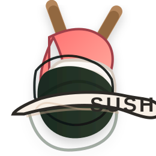

🎤 Rapper
Music is my creative outlet. Bars on the beat, energy in every verse. Rapping keeps me sane while I hustle.

SushI wear multiple hats because I get bored doing just one thing. Here's the real story.
Music is my creative outlet. Bars on the beat, energy in every verse. Rapping keeps me sane while I hustle.
Built businesses from zero. Made $45k in revenue before I turned 21. Still learning, still scaling.
Education matters. Balancing school with everything else taught me time management and resilience.
Full-time job, flexible life. Remote work gives me the freedom to build on the side and chase music.
Obsessed with building and creating. Cafes, products, ideas—anything I can turn into reality.
Artistic vision drives everything. Design, music, business strategy—it all comes from that creative place.
Built products, found customers, made real money. But that's not the flex. The flex is proving you don't need a CEO title or a trust fund to build something real. You just need the hustle and the vision.
Freedom. Creating things that matter. Proving that age isn't a limit when you have vision and discipline.
A hand-drawn path from rapper to founder to cafe owner—each move shaping the story.
Started with bars, beats, and the grind of creating on the spot.
Brought ideas to life, launched products, and turned hustle into revenue.
Dreaming of a space where vibes, coffee, and community meet.
Built flexibility from a full-time remote grind that still lets the side hustle breathe.
Design, music, and business all pulled from the same creative source.
Where these paths meet: a bold, restless energy that keeps building.